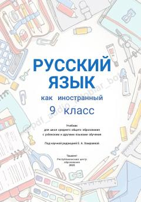

RT9-sinf o'quvchilari uchun rus tili fanidan o'quv-metodik darslik.
Ushbu darslik O'zbekiston umumta'lim maktablarining 9-sinf o'quvchilari uchun rus tilini chet tili sifatida o'rganishga mo'ljallangan. Kitobda nutqiy faoliyatning barcha turlari, jumladan o'qish, gapirish, tinglash va yozish bo'yicha tizimli mashqlar hamda qiziqarli loyihalar jamlangan.